Making it by hand
The printed shades were only part of it. I prepared the copper arms, did the electric wiring and assembled the lamp myself.
Doing the wiring taught me how much of a lamp's design is hidden inside it.
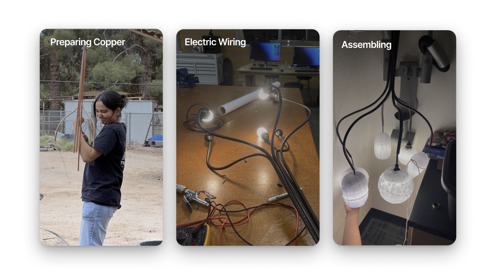

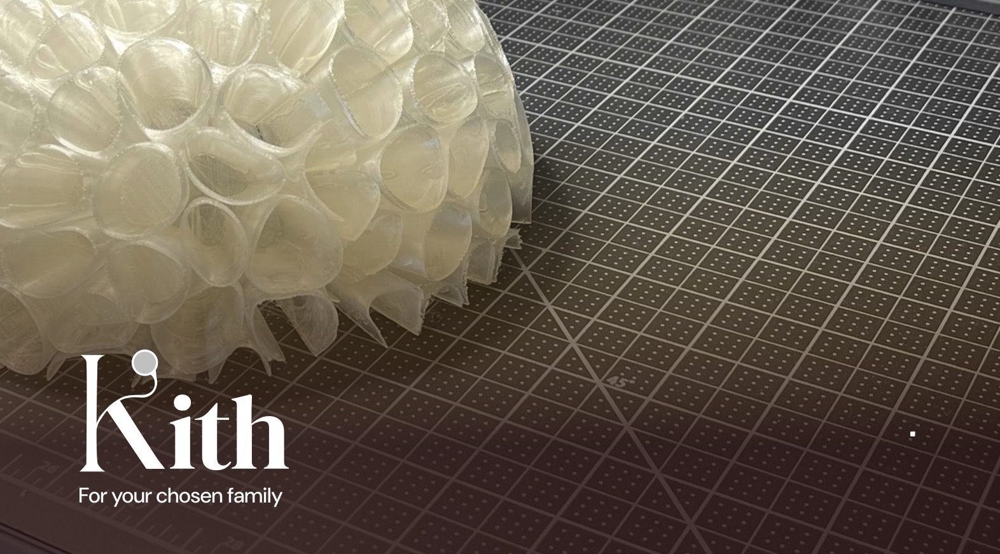
A pendant lamp for the dining table, for your chosen family. Each shade takes its form from a fruit that an indigenous community gathers and shares.
Sketched, modelled, 3D printed, wired and assembled by hand.
Kith means your people, the ones you choose. I wanted to design something for the table where they gather.
So the starting point was the shared meal. I looked at rituals where food brings a community together, like the cacao ceremony, where cacao is shared as a moment of reflection.
A lamp over a table is what everyone sits under. That made light the right object for this idea.
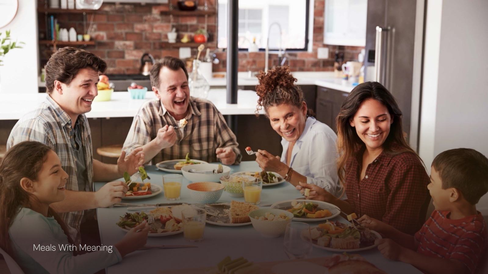
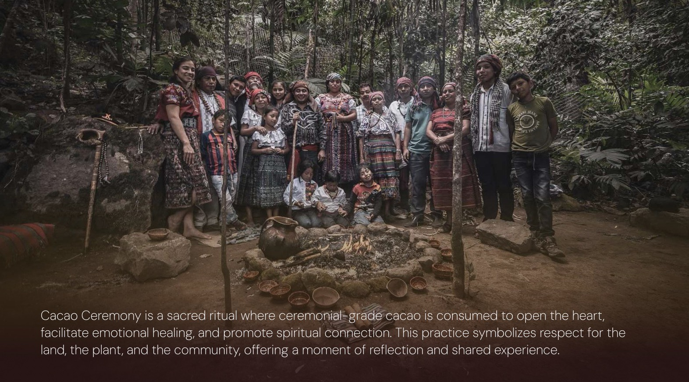
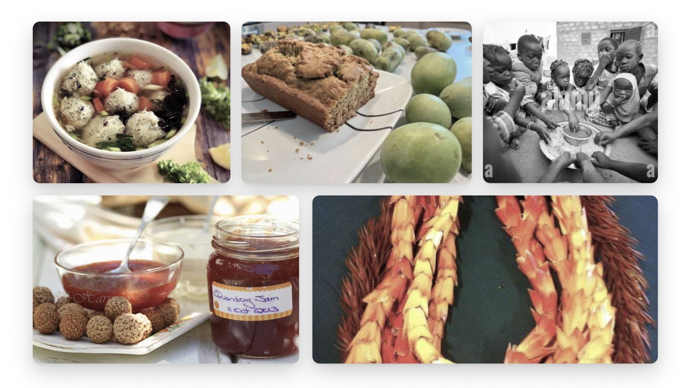
I researched fruits that communities gather and share, and wrote notes on each by hand.
Quandong from the central deserts of Australia, hala pandanus from the Pacific Islands, rambutan from Southeast Asia, baobab from Africa, cacao pod from Mesoamerica and paw paw from the eastern United States.
Each fruit has a strong form of its own. Those forms became the shades.
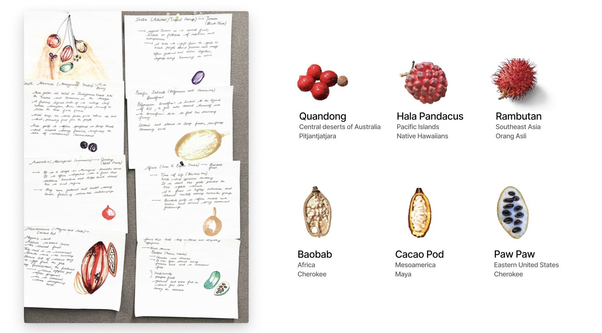
The forms started on paper. I sketched many kinds of objects before it narrowed to a lamp.
The idea that stayed was a cluster: several shades hanging from one stem, like fruit on a branch.
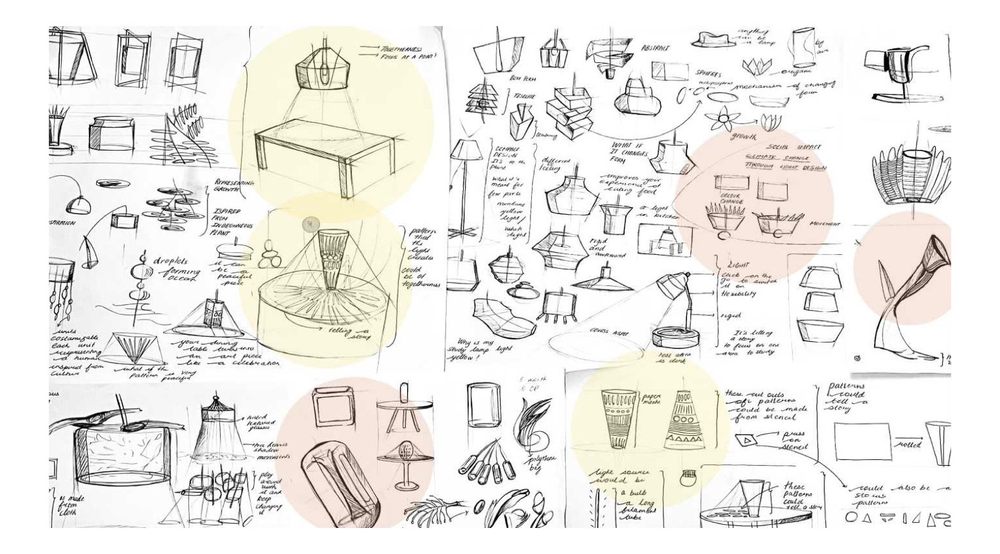
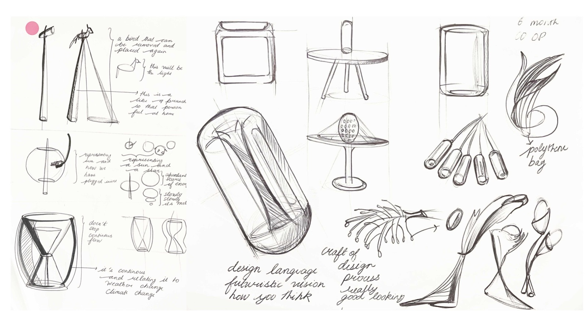
I modelled the shades in Rhino and Grasshopper and 3D printed them.
Printing let me test how each surface holds light. A pattern that looks good on screen can glow very differently once there is a bulb behind it.
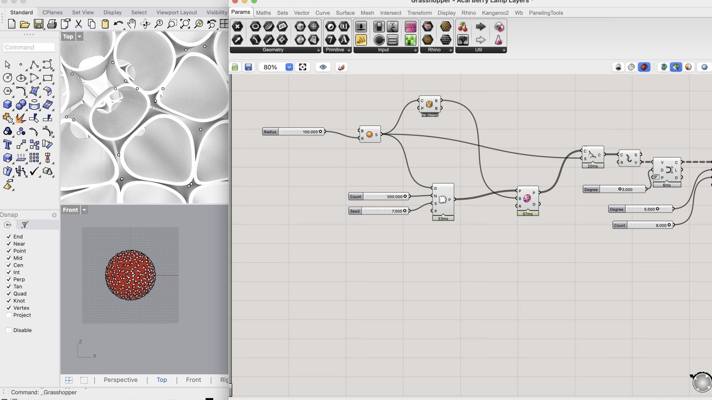
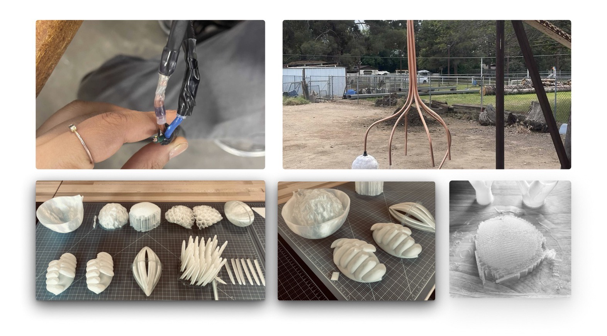
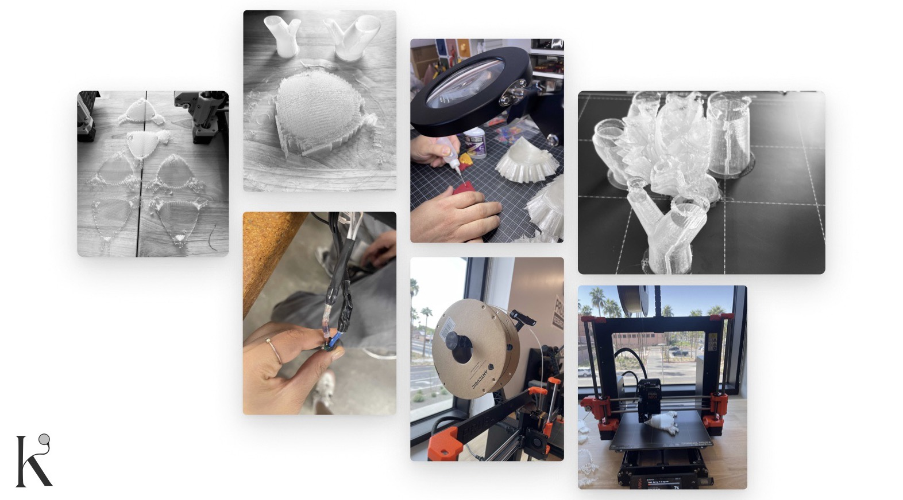
The printed shades were only part of it. I prepared the copper arms, did the electric wiring and assembled the lamp myself.
Doing the wiring taught me how much of a lamp's design is hidden inside it.

The shades hang as a group from one stem, each a different fruit, all lit together.
Seen over a table in a dark room, it does what I wanted: it pulls people in around it.


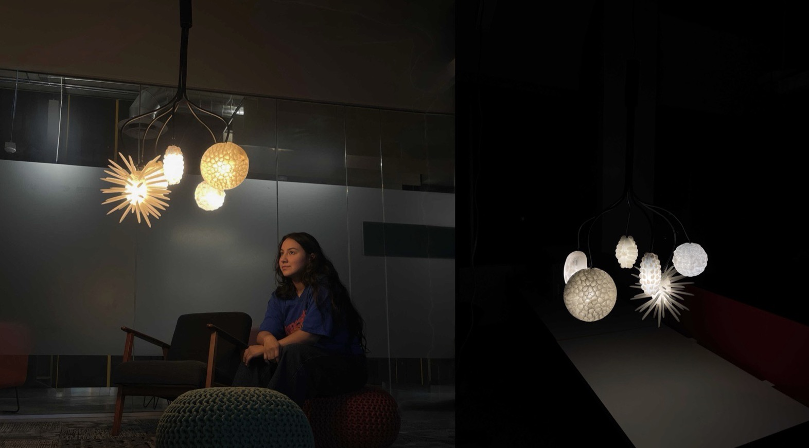